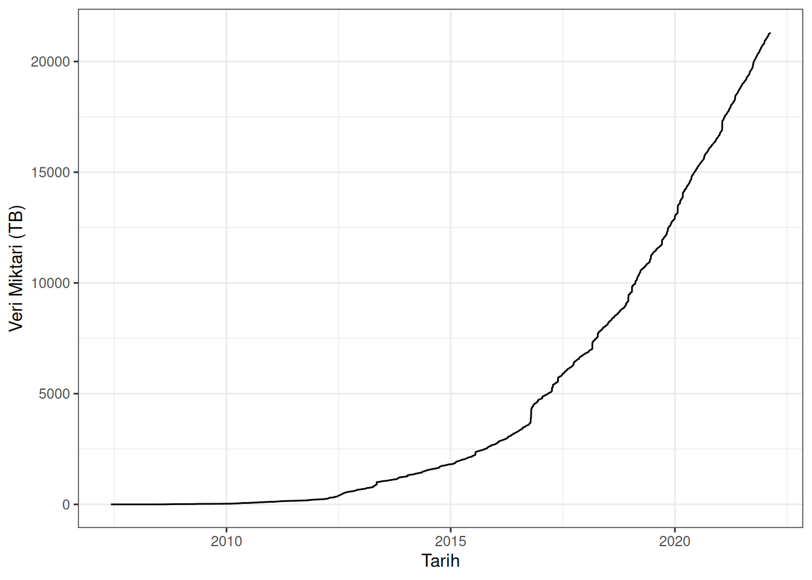

5 Neden Veri Analizi?
Öncelikle veri bilimi oldukça havalı bir meslek. Bunu sadece ben söylemiyorum, internette biraz araştırırsanız veri biliminin ne kadar gözde bir alan olduğunu anlayabilirsiniz.

Ayrıca Chandler Bing’in de zamanında icra ettiği bir meslekti. Tabii o zamanlar bu kadar çok popüler değildi.

Ancak benim değinmek istediğim nokta daha farklı.
5.1 Biyolojik veri miktarı hızlı bir şekilde artıyor
Günümüzede yaşam bilimleri alanında hızlı bir gelişme mevcut. Özellikle Yeni Nesil Dizileme Teknolojileri (Next Generation Sequencing) alanında yaşanan hızlı gelişim, kamuya açık halde paylaşılan DNA ve RNA dizileme veri miktarını inanılmaz ölçüde arttırdı (Knapp ve Hofreiter 2010).
Örnek vermek gerekirse, YND verisinin depolanıdğı SRA arşivindeki büyümeyi Şekil 5.1’da görebilme imkanınız var.
Peki bu veri bütünlüğünün içinde neler var? Kişisel gözlemlerim neticesinde
Bu veri bütünlüğüyle çalışmak için yeni yöntemler geliştirilmesi gerekmektedir.